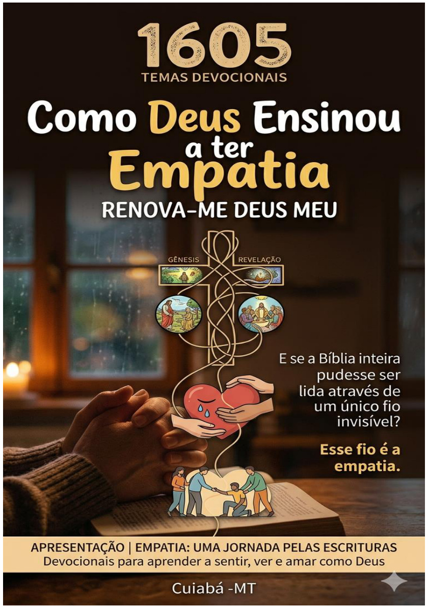

Empatia: uma jornada pelas Escrituras
Devocionais para aprender a sentir, ver e amar como Deus. Escolha um volume para começar sua leitura.
Volume 1 disponível neste lançamento. Os demais serão acrescentados nas próximas atualizações.
Volume 2
Em construção
Este módulo será disponibilizado em uma próxima atualização do aplicativo. Que esta jornada de leitura continue crescendo, volume por volume.